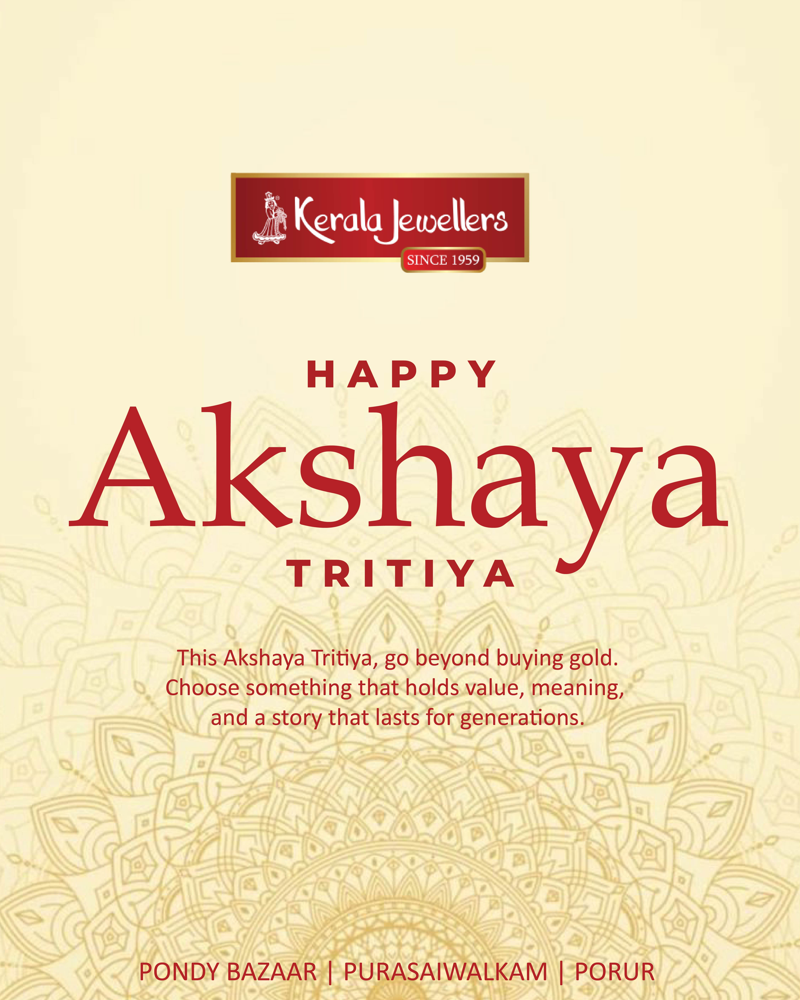

kshaya Tritiya Gold Buying Guide 2026 – Best Jewellery Offers in Porur, Chennai

? What Makes Akshaya Tritiya So Important?
Akshaya Tritiya is one of the most powerful days in the Indian calendar for starting something new—especially buying gold. It is believed that any investment made on this day grows continuously and brings lasting prosperity.
That’s why thousands of families choose this occasion to purchase gold jewellery, coins, and bridal collections.
If you are searching for the best Akshaya Tritiya gold offers in Porur, this guide will help you make the right decision.
?? What Should You Buy This Akshaya Tritiya?
Choosing the right jewellery matters. Here are the most popular options:
?? Bridal Jewellery
Perfect for upcoming weddings. Investing now helps you avoid price fluctuations later.
?? Gold Coins
A simple and meaningful way to start a tradition or investment.
? Daily Wear Gold
Lightweight and stylish jewellery that you can use every day.
?? Why Choose a Local Jewellery Shop in Porur?
When buying gold, trust matters more than anything. A reliable local showroom gives you:
- Genuine and certified gold
- Transparent pricing
- Personalized service
- Easy access for future purchases
Kerala Jewellers in Porur, Chennai is known for combining tradition with modern designs, making it a preferred choice for many families.
?? Akshaya Tritiya Offers You Shouldn’t Miss
Festive offers make this the perfect time to buy. At Kerala Jewellers, you can enjoy:
- Reduced or zero making charges on selected jewellery
- Special festive discounts on gold collections
- Exclusive bridal offers for wedding shoppers
These limited-time offers help you get more value for your purchase.
?? Tips to Buy Gold Smartly This Festival
Before you visit a jewellery store, keep these tips in mind:
- Check the current gold rate
- Decide your budget in advance
- Choose BIS hallmarked jewellery
- Explore multiple designs before buying
Planning ahead ensures you make a smart and satisfying purchase.
?? Discover Stunning Jewellery Collections in Porur
From traditional temple jewellery to modern minimalist designs, Kerala Jewellers offers a wide range of collections suitable for every occasion.
Whether you’re buying for a wedding, investment, or gifting, Akshaya Tritiya is the ideal time to explore premium gold jewellery in Chennai.
â€Â